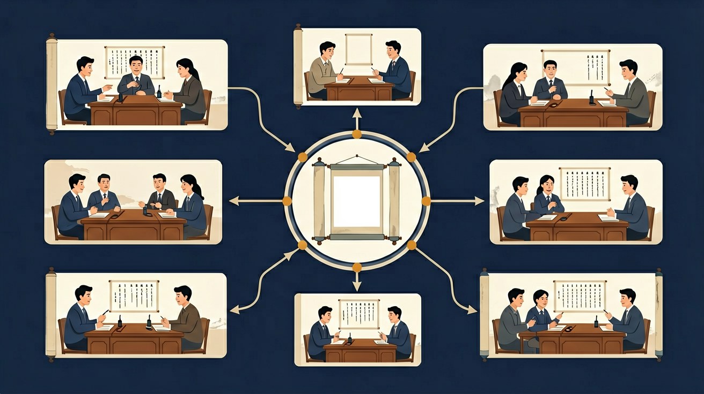

❓ 为什么讨论时总有人不听我说话？
❓ 辩论是不是谁声音大谁就赢？
❓ 为什么老师说讨论要有'规则'？
学完这一课，这些问题你都能自信地回答。
And：学生知道讨论需要轮流发言
But：不清楚如何有序表达不同观点
Therefore：学会用规则避免争吵
辩论有三大规则：1.正反方轮流发言（比如正方说1分钟，反方接着1分钟）；2.发言要举牌示意，像交通红绿灯一样有秩序；3.不能打断别人，就像排队打饭不能插队。例如：讨论‘该不该天天布置作业’时，小明举牌说‘我认为要布置’，小红必须等他坐下才能举牌反驳。
🌍 就像踢足球要遵守规则，辩论时也要守规矩。上周三（3月15日）班上讨论春游地点时，有同学抢话导致会议乱了10分钟。
看到对方发言超时了，你应该：
选出辩论的三要素
继续探索，成为辩论达人！
设计三步沟通方案解决'课间是否该踢球'的争议
And：学生能说出简单观点
But：理由总是‘我觉得’或‘妈妈说’
Therefore：用事实数据支撑观点
好论据要像盖房子的砖头一样结实：1.用数字（比如‘我们班45人中32人支持课后托管’）；2.举真实案例（像‘上周二（4月2日）新闻说某校取消作业后成绩下降’）；3.权威来源（如‘教育部规定小学生每天睡眠应达10小时’）。例如：证明‘应该穿校服’时，说‘调查显示穿校服能减少80%攀比现象’比‘我觉得好看’更有力。
🌍 就像买玩具要比较价格和质量，上周小华用‘这款乐高销量第一’说服妈妈，比光说‘我想要’管用多了。
哪个是关于‘减少屏幕时间’的最好论据？
讨论像拼图，辩论像拔河
讨论追求合作补全信息，辩论强调说服对方
讨论可以有多解，辩论必须选边站
班会发言是讨论，班级辩论赛是辩论
家庭购物讨论用'我觉得'，说服父母用'因为...所以'
先独立作答，再点选项查看对错与错因。
下列哪项是《夏洛的网》中支持'不应宰杀威尔伯'的事实论据？
辩论中突然有同学大喊'杀猪的人都是坏蛋'，这违反了哪条讨论规则？
当反方说'生命都珍贵'时，正方最有效的反驳是：
有效的辩论观点需要包含____和____两个要素
答案：事实依据、逻辑推理
事实保证真实性，逻辑确保合理性
当对方发言时，我们应该先____再____
答案：认真倾听、思考回应
讨论的基础是相互尊重和理解
✅ 手握发言令牌才能说话
💡 混淆日常聊天与课堂讨论
✅ 用'因为...所以'句式练习
💡 把辩论当成立场表态
阅读辩题，将论点分别拖入正方或反方的区域
拖放论点到这里
拖放论点到这里
选择最恰当的词语完成辩论词
对方提出了反驳，选择最有力的回应方式
给我一个辩题（如：「网络游戏有益还是有害」），指定我站其中一方，我来说立论，你来扮演对方提出反驳，我来学习如何应对。
📌 你可以把上面的内容复制给 AI 助手（如 DeepSeek、ChatGPT），开始互动练习！
回忆：今天学了哪些关键词和规则？试着说出来。
用自己的话解释今天学的核心概念，不看书能说清楚吗？
用今天的知识解决一个实际问题，或写一个新例子。
把今天的知识与已有知识联系起来：有什么共同点？有什么区别？能不能自己创造一道新题？